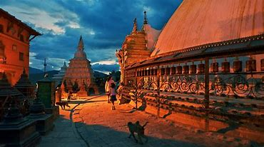

Capital of Nepal
Kathmandu, Nepal's capital, is set in a valley surrounded by the Himalayan mountains. At the heart of the old city’s mazelike alleys is Durbar Square, which becomes frenetic during Indra Jatra, a religious festival featuring masked dances. Many of the city's historic sites were damaged or destroyed by a 2015 earthquake. Durbar Square's palace, Hanuman.
Kathmandu, Nepal's capital, is set in a valley surrounded by the Himalayan mountains. At the heart of the old city’s mazelike alleys is Durbar Square, which becomes frenetic during Indra Jatra, a religious festival featuring masked dances. Many of the city's historic sites were damaged or destroyed by a 2015 earthquake. Durbar Square's palace, Hanuman Dhoka, and Kasthamandap, a wooden Hindu temple, are being rebuilt.
The square's Maju Deval, a pagoda known for its steep stairs, is also being rebuilt. The city’s other notable religious sites being rebuilt include Swayambhunath, a Buddhist temple known as the “Monkey Temple” for its main inhabitants, and Boudhanath, a massive Buddhist stupa. Pashupatinath, a Hindu temple dating to the 1400s, survived the earthquake. South of the Bagmati River is the city of Patan, renowned for metalsmithing and other crafts, and home to the Patan Museum, housing Hindu, Buddhist and Tantric artifacts. Regional food specialties are momos (dumplings), dal bhat (lentils, rice and vegetables) and Newari buffalo dishes.
Click on 'Book' button for fill up the details so that you cant visit this place for tour!!!